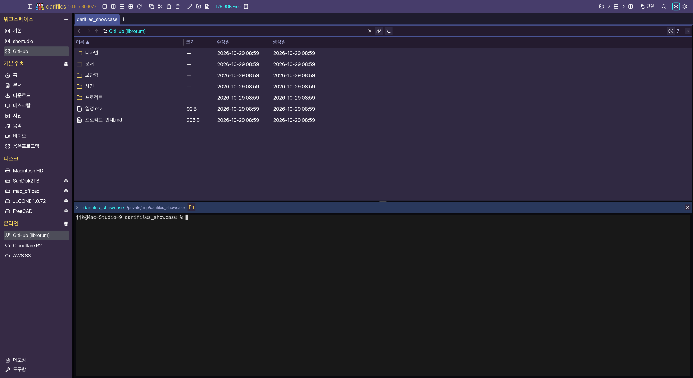
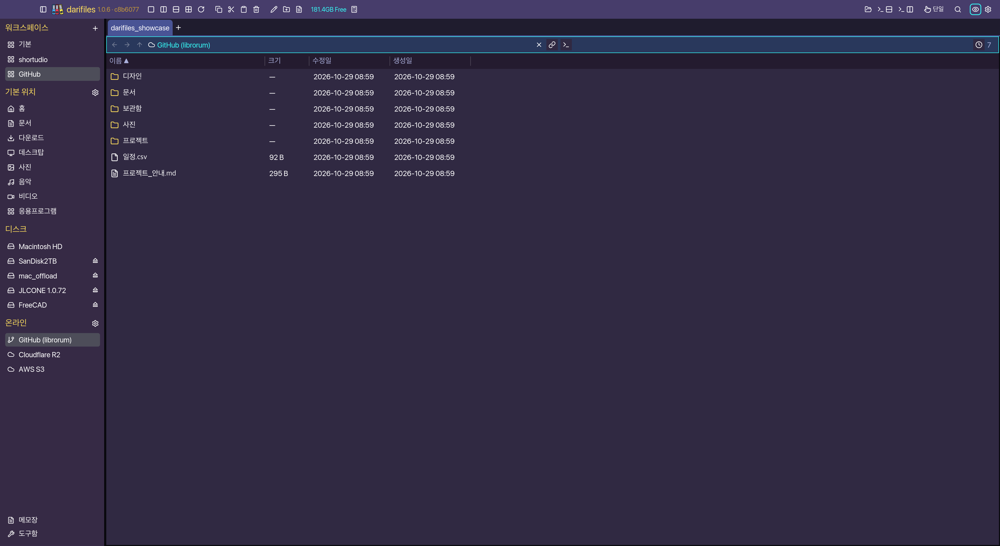
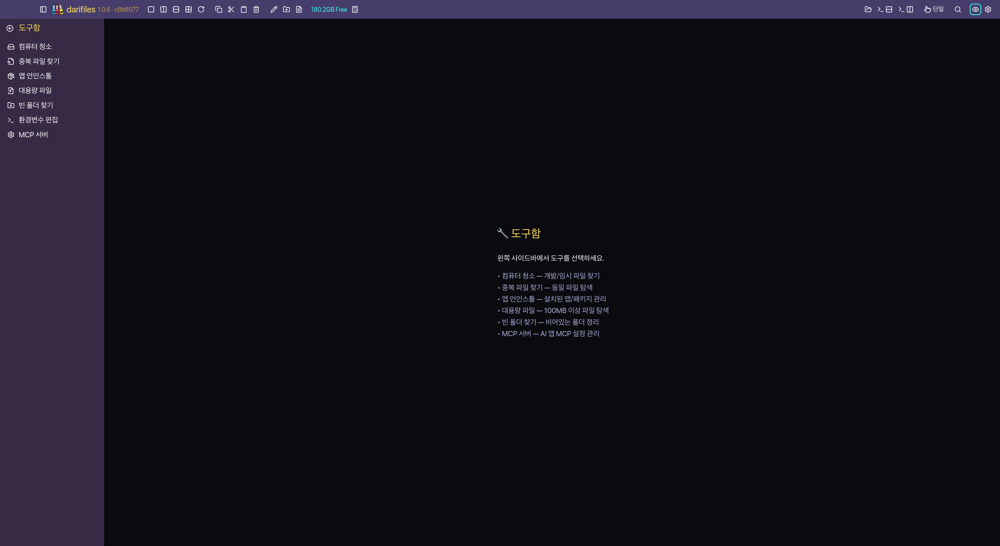

여러 폴더를 나란히
좌우·상하·4분할과 탭으로 폴더를 함께 펼쳐 보세요. 워크스페이스마다 탭과 터미널을 따로 보관합니다.
폴더를 열면, 작업 공간이 됩니다.
폴더를 나란히 펼치고, 문서를 바로 읽고,
터미널로 작업을 이어가세요. 다리파일 한 창에서.
macOS / Windows / Linux

창을 오가는 시간을 줄이세요
파일을 옮기는 순간부터 작업을 마칠 때까지.
자주 쓰는 도구를 파일 가까이에 모았습니다.
좌우·상하·4분할과 탭으로 폴더를 함께 펼쳐 보세요. 워크스페이스마다 탭과 터미널을 따로 보관합니다.
스페이스 키로 이미지·PDF·한글 문서를 미리 봅니다. 문서를 확인하려고 다른 앱부터 열 필요가 없습니다.
컴퓨터의 폴더와 GitHub·S3·Cloudflare R2를 같은 탐색기에서 살펴보세요. 서비스에 따라 지원하는 파일 작업은 다릅니다.
중복 파일, 대용량 파일, 빈 폴더를 찾는 도구함. 무엇이 공간을 차지하는지 확인하고 정리할 수 있습니다.
실행 중인 다리파일에서 촬영한 화면입니다. 탭을 눌러 작업 모습을 살펴보세요.


darifiles.app을 응용 프로그램 폴더로 옮겨 실행하세요.EXE 파일을 원하는 폴더에 저장한 뒤 실행하세요. 보안 안내가 나타나면 다운로드 출처와 파일을 확인하세요.
다운로드한 폴더에서 압축을 풀고 실행 권한을 부여하세요.
tar -xzf darifiles-linux-x86_64.tar.gz
chmod +x darifiles
./darifiles공개된 최신 버전과 변경 사항은 GitHub 릴리즈에서 확인할 수 있습니다. 자동 업데이트 기능은 다음 앱 릴리즈에 포함될 예정입니다.